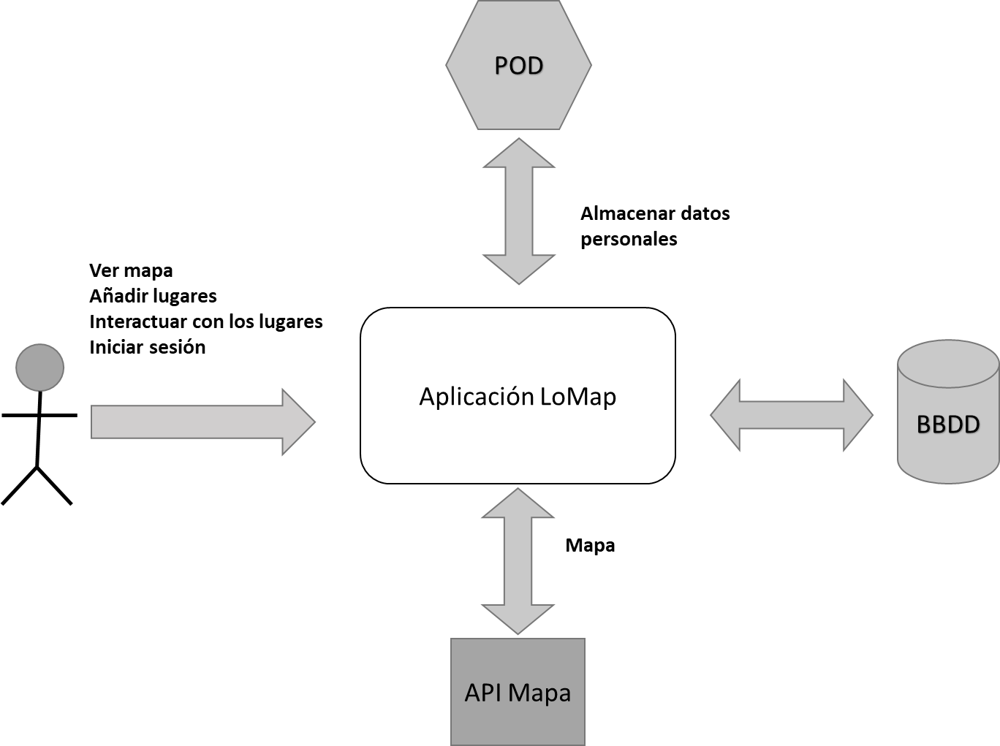
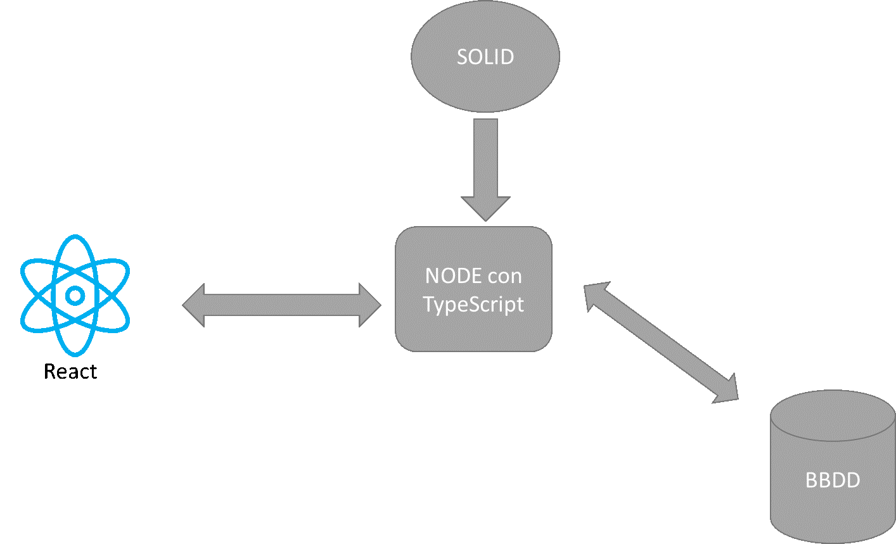
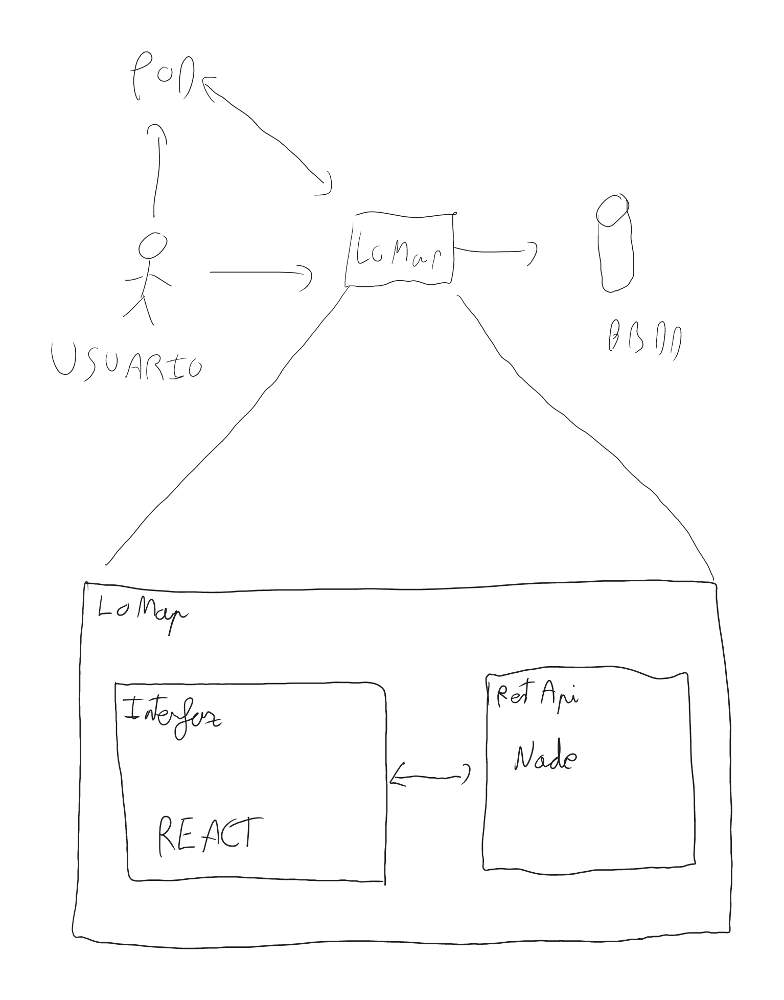
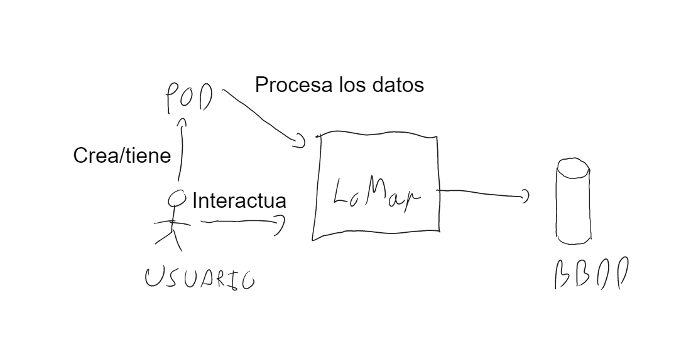
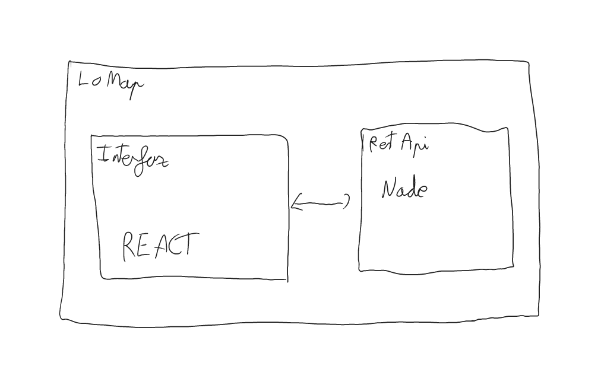
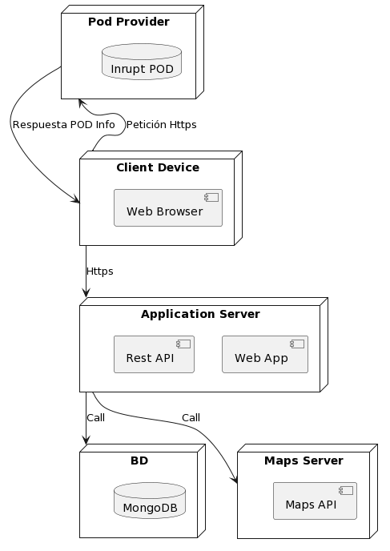

1. Introducción y objetivos
1.1. Requisitos funcionales
1.2. Atributos de Calidad
| Prioridad | Atributo de Calidad | Motivación |
|---|---|---|
1 |
Usabilidad |
Todos los usuarios deber poder usar la aplicación, ya sean personas con conocimiento de la misma o no. |
2 |
Privacidad |
La información de cada usuario solo podrá ser vista por dicho usuario (exceptuando datos compartidos por él mismo). |
3 |
Eficiencia |
Las respuestas de la aplicación deben de darse en un tiempo de respuesta adecuado. |
4 |
Integridad |
Los datos que se muestren deben de ser los reales en todo momento. |
5 |
Interoperabilidad |
La aplicación debe poder comunicarse con los datos que se extraigan del resto de aplicaciones. |
1.3. Stakeholders
| Rol | Contacto con la Aplicación | Expectativas |
|---|---|---|
Clientes |
Usan la aplicación directamente. Interactúan con los mapas direrctamente de varias maneras. |
Esperan poder utilizar la aplicación sin muchas complicaciones, utilizando mapas que le sean familiares, con fluidez de cargas y sin que sus datos privados se vean comprometidos. |
Establecimientos |
Utilizan la aplicación indirectamente al aparecer el negocio en ella y directamente si la usan para crear su propio pod. |
Esperan que los datos de su establecimiento sean correctos y poder compartir con sus clientes lo que deseen. |
Desarrolladores |
Son los creadores de la aplicación y los que se encargarán de su actualización. |
Deben desarrollar la aplicación completa y trabajar en grupo para conseguirlo. |
2. Restricciones de la Arquitectura
2.1. Restricciones técnicas
| Restricción | Descripción |
|---|---|
SOLID |
SOLID permite a los usuarios guardar sus datos de forma segura y descentralizada, en unos almacenes llamados Pods. |
TypeScript |
Emplearemos TypeScript, un lenguaje de programación tipado basado en JavaScript. |
Git |
El código de la aplicación será guardado, compartido y contará con un control de versiones gracias a un repositorio remoto en GitHub. |
React |
React será empleado para la implementación del Frontend de la aplicación. |
3. Alcance y contexto del sistema
3.1. Contexto de negocio

El sistema preverá al usuario un mapa con el que podrá interactuar añadiendo lugares los cuales se les podrá añadir información adicional, además se usan pods para almacenar los datos personales para dar más privacidad al usuario siguiendo los principios SOLID. También se dispondrá de una base de datos para información general. * Cliente: es la persona que crear y visualiza marcadores en el mapa. * LoMap: muestra al usuario la interfaz para poder interactuar con él. * Pod permita almacenar datos de forma descentralizada aportando seguridad. * BBDD se encarga de almacenar datos genéricos.
3.2. Contexto tecnico

La aplicación usara la tecnología de SOLID que permite que el proyecto sea descentralizado gracias al uso de lo pods. Para implementar esta tecnología se usarán otras como REACT para el frontend , NODE para el backend y estas dos usarán una variante de JavaScript llamada TypeScript.
| Tecnologia | Descripción |
|---|---|
React |
Biblioteca de JavaScript creada para facilitar el desarrollo del frontend de aplicaciones , esta tecnología es mantenida por facebook. |
TypeScript |
Lenguaje de programación derivado de JavaScript que permite el tipado estático, este es libre y de código abierto desarrollado y mantenido por Microsoft. |
SOLID |
Especificación que permite al usuario almacenar sus datos de forma descentralizada en los pods. |
Node |
Node es un entorno de ejecución de backend para JavaScript. |
4. Estrategia de solución
4.1. Decisiones tecnológicas
Para la realización de LoMap hemos decidido usar las siguientes tecnologías ya que se ajustan a las necesidades del desarrollo :
-
Node js como entorno de ejecución para el backend con ayuda del framework de Expres js .
-
React para la creación del frontend.
-
El lenguaje elegido es typeScript ya que nos permite trabajar con tipos estáticos.
-
La base de datos que usaremos todavía no la tenemos clara a esta altura del desarrollo.
-
Para el control de versiones usaremos github.
-
Además, usaremos una api externa que nos proveerá el mapa la cual no se ha decidido todavía.
4.2. Decisiones acerca de la descomposición a alto nivel
El patron que se usara para el desarrollo sera MVC ya que nos permite tener una estructura en el codigo más entendible , ademas de sparar la logica y la interfaz.
4.3. Decisiones en como alcanzar metas de calidad claves
Para conseguir la privacidad que deseamos usaremos pods para que cada usuario almacene en estos su información propia evitando así que los datos sensibles se almacenen en una base de datos, ara la eficiencia hemos decidido usar React lo que nos permite que se rendericen las cosas que cambian, y finalmente para la interoperabilidad se está intentado llegar a un consenso con otros equipos para conseguir una estructura parecida para almacenar en los pods y una restapi que devuelva lo mismo .
4.4. Decisiones organizacionales
El equipo se reunirá un minio de 1 hora semanal de la cual se hará un acta donde quedará reflejada esta reunión, además contamos de un grupo de WhatsApp donde si se toma una decisión importante quedará reflejada en el github, además para el control del trabajo realizado se usarán las issues de gitHub junto con el Kamban reflejando así todas las decisiones en el github .
5. Vista de Bloques
5.1. Sistema General de Caja Blanca
El diagrama del sistema general muestra una descripción general del sistema con los componentes básicos. 
5.2. Nivel 1
La caja blanca consta de los componentes más genéricos del sistema como la caja negra , el usuario , los pods y la base de datos. EL usuario interactúa con su pod y con LoMap insertando su pod en la aplicación para iniciar sesión y poder sus localizaciones, a su ves la aplicación esta en contacto con el pod y la base de datos que son formas de mantener la persistencia. 
5.3. Nivel 2
En este nivel disponemos de la informacion sobre lo que hay dentro de la caja negra.En este nivel disponemos de la información sobre lo que hay dentro de la caja negra. Aquí podemos observar las distintas partes del programa y como interactúan entre ellas , el frontend/interfaz es la parte con la que la aplicación se comunica con el usuario permitiendo visualizar el mapa, mientras que el backend se encarga de de ejecutar la lógica del programa e interactuar con la base de datos y el pod. 
6. Vista de Ejecución
6.1. Escenario de ejecución 1. Registro de nuevo usuario

6.2. Escenario de ejecución 2. Registro de nuevo usuario
actor Usuario entity Webapp entity Restapi database POD database BBDD Usuario -> Webapp: Introduce su pod Webapp -> Restapi: envía el pod Restapi <- POD: Extrae datos del usuario Restapi <- BBDD: Recibe datos necesarios Webapp <- Restapi: Devuelve localizaciones Usuario -> Webapp: Muestra localizaciones
6.3. Escenario de ejecución 3. Usuario visualiza una de sus localizaciones.
actor Usuario entity Webapp entity Restapi database POD database BBDD Usuario -> Webapp: Selecciona la localización Webapp -> Restapi: Pide la información Restapi -> POD: Busca datos de la localización Restapi -> BBDD: Busca datos de la localización Restapi <- POD: Devuelve los datos Restapi <- BBDD: Devuelve los datos Webapp <- Restapi: Devuelve la información Usuario -> Webapp: Muestra la información
7. Vista de Despliegue
7.1. Infraestructura Nivel 1

- Motivación
-
El software no puede funcionar sin hardware. Esta infraestructura subyacente puede y afectará su sistema y / o algunos conceptos transversales. En este esquema se trata de reflejar de manera clara cómo están relacionados los elementos hardware entre sí.
- Características de calidad y rendimiento
-
El rendimiento de una aplicación depende en gran medida de los recursos de los que disponga el usuario y de los que disponga el servidor o servidores que intervengan. Está claro que estos parámetros no los podemos mejorar. El otro factor que afecta al rendimiento, aunque en menor porcentaje, son las aplicaciones que se implementen. Por ello, se harán las máximas optimizaciones de código posibles con el fin de mejorar en la medida de lo posible este rendimineto
- Mapeo de Bloques de Construcción para la Infraestructura
|Decisión Arquitectónica | Ventajas | Desventajas | TypeScript | Consideramos que es un lenguaje más potente incluso que JavaScript, arreglando uno de los mayores problemas de este como es el tipado dinámico. Además, es el lenguaje heredado del proyecto inicial, por lo que nos aporta confianza a la hora de tener que resolver problemas con el profesor. | No tenemos demasiada experiencia con este lenguaje, por no decir ninguna. Tampoco somos demasiado expertos en JavaScript
| React.js | Ayuda a simplificar el desarrollo del Frontend. Además tiene una amplia documentación, y también es la recomendación de los profesores. | Como en el caso anterior, tampoco somos muy experimentados en el lenguaje.
| MongoDB | Es una de las BBDD no relacionales integradas con TypeScript más habituales y más documentadas. | No soporta transacciones y gasta muchos recursos de memoria.
| Node.js | Es una tecnología muy utilizada actualmente, que facilita en gran medida la generación de código en el backend. Además, es una tecnología que veremos en otra asignatura en las próximas semanas, por lo que facilitará bastante la curva de aprendizaje. | Como viene siendo habitual, no hemos trabajado nunca con ella.
8. Requisitos de calidad
8.1. Árbol de calidad

8.2. Escenarios de calidad
| Atributo de calidad | Escenario de calidad |
|---|---|
Usabilidad |
Al iniciar la aplicación por primera vez, el usuario debe poder entender cómo usarla en menos de 10 minutos. |
Privacidad |
Cuando un usuario intente acceder a los datos privados de otra persona, el sistema debe prohibirle el acceso. |
Eficiencia |
Las respuestas de la aplicación deben darse en menos de 10 segundos en circunstancias normales. |
Integridad |
Cuando usuarios sin registro en la aplicación intenten modificar datos, el sistema deberá negarles la operación. |
Interoperabilidad |
Cuando otra aplicación LoMap quiera compartir datos con el sistema, este tiene que responder correctamente. |
9. Riesgos y deuda técnica
10. Glosario
| Término | Definición |
|---|---|
SOLID |
Proyecto de descentralización de datos en la web que permiten al usuario final decidir dónde se van a almacenar sus datos, mejorando así la privacidad. |
POD |
Servidor web personal para que cada usuario guarde sus datos y controle su acceso. Ayudan a seguir los principios SOLID. |
Node.js |
Entorno de desarrollo para JavaScript que permite establecer varias conexiones a la vez. |
TypeScript |
Lenguaje que añade tipos estáticos al lenguaje JavaScript. |
React |
Librería de JavaScript para crear interfaces de usuario |
About arc42
arc42, the Template for documentation of software and system architecture.
By Dr. Gernot Starke, Dr. Peter Hruschka and contributors.
Template Revision: 7.0 EN (based on asciidoc), January 2017
© We acknowledge that this document uses material from the arc 42 architecture template, http://www.arc42.de. Created by Dr. Peter Hruschka & Dr. Gernot Starke.